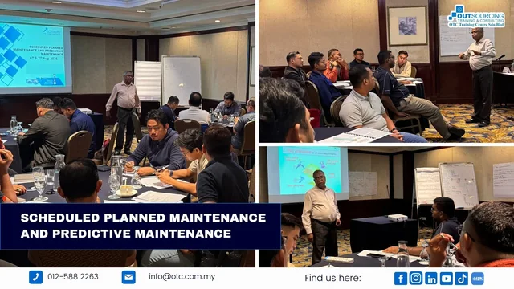
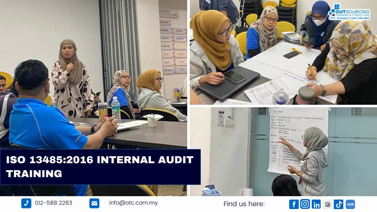
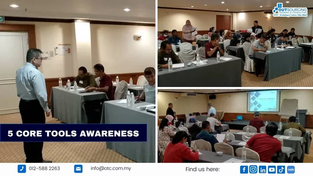

people
Explore people programmes Communication & leadership
EQ and communication skills for managers and leaders.
Trusted corporate training across Malaysia
A look inside our workshops: the conversations, collaboration and shared learning behind each programme.
Explore the highlightsSelect an image to view the full workshop collage.
6 highlights
EQ and communication skills for managers and leaders.

Analysing and visualising data with Power BI.

Basic fire fighting and fire-drill training.

Scheduled planned maintenance and predictive maintenance.

ISO 13485:2016 internal audit training.

5 Core Tools Awareness.
Try another topic or reset the filters.
Original workshop collages from OTC’s official gallery.
Visit the full official galleryExplore training topics or talk to our team about your organisation’s needs.